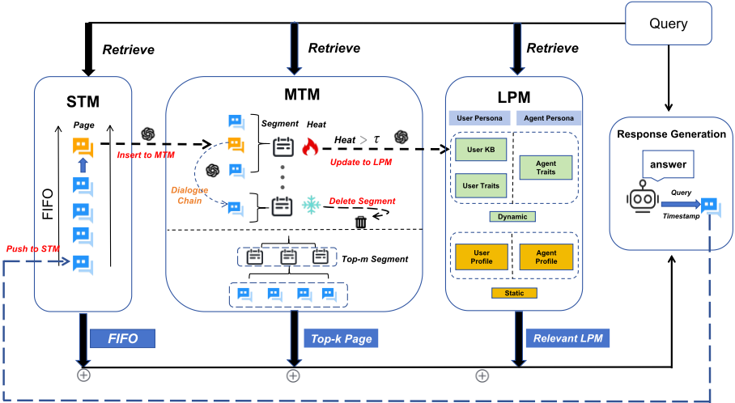
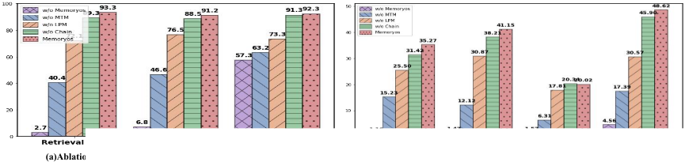
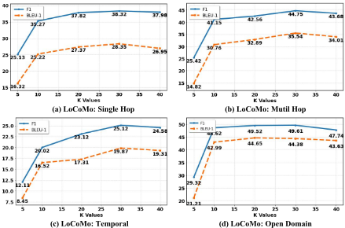
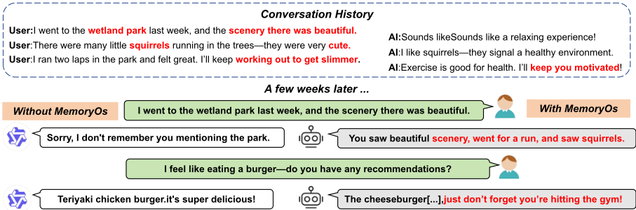

AI Agent 的记忆操作系统（MemoryOS）
LLM 受固定上下文窗口限制，在长对话中难以维持记忆连贯性与个性化。论文借鉴操作系统的分段分页、FIFO 与热度淘汰等内存管理思想，提出 MemoryOS，为 AI Agent 构建短期记忆（STM）、中期记忆（MTM）与长期个人记忆（LPM）三级分层存储，并配套 Storage、Updating、Retrieval、Generation 四个模块：STM 到 MTM 按对话链 FIFO 迁移，MTM 到 LPM 采用基于热度得分的分段分页淘汰，检索时先选段再选页并融合 90 维用户画像。在 LoCoMo 与 GVD 基准上，MemoryOS 在 GPT-4o-mini 上平均 F1 提升 49.11%、BLEU-1 提升 46.18%，且每轮 LLM 调用次数（4.9 vs 13）与检索 token 消耗（3,874 vs 16,977）显著低于 A-Mem 与 MemGPT。消融显示 MTM 贡献最大。该工作对团队构建 Agent 记忆系统与上下文管理有直接参考价值，且代码已开源。
LLM 依赖固定长度上下文窗口进行记忆管理，在存在显著时间跨度的多轮/多会话对话中导致记忆碎片化、事实不一致与个性化不足；现有记忆方法分为知识组织、检索机制、架构驱动三类，但各自孤立地关注单一维度（存储结构、检索机制或更新策略），缺乏面向 AI Agent 的统一、系统性记忆管理框架。
借鉴操作系统内存管理原理提出 MemoryOS，含四个模块：Memory Storage、Updating、Retrieval、Generation。存储采用三级分层：STM 以对话页（查询 Q、回复 R、时间戳 T）存储实时对话并构建对话链；MTM 采用分段分页架构，按主题将对话页聚成段（语义+关键词 Jaccard 相似度超过阈值 θ 合并，段内容由 LLM 摘要）；LPM 维护 User Persona（含 90 维 User Traits、User KB）与 Agent Persona。更新上，STM→MTM 按对话链 FIFO 迁移；MTM→LPM 基于热度得分（访问次数 N_visit、交互页数 L_interaction、时间衰减 R_recency）进行淘汰与晋升，User KB 与 Agent Traits 用固定 100 容量的 FIFO 队列。检索时 STM 全量取回，MTM 两阶段检索（先 top-m 段、再 top-k 页），LPM 取 top-10 语义相关条目；最终将三层记忆与用户查询整合为 prompt 生成回复。
LoCoMo 基准（GPT-4o-mini）：相比基线平均 F1 提升 49.11%，BLEU-1 提升 46.18%
GVD 数据集：超过 SOTA 基线 A-Mem 3.2% 的准确率
效率：平均每轮响应 LLM 调用 4.9 次（A-Mem* 为 13 次），检索消耗 token 3,874（MemGPT 为 16,977）
消融实验：移除整个 MemoryOS 后性能大幅下降；MTM 影响最大，其次 LPM，对话链 Chain 影响最小
超参分析：top-k 检索页数增大时性能提升但超过阈值后收益递减并引入噪声，k=10 为性能与开销的较优平衡点
此前记忆方法（TiM、MemoryBank、MemGPT、A-Mem 等）各自只覆盖存储结构、检索机制或更新策略中的单一维度；MemoryOS 首次将操作系统的分段分页、FIFO、热度淘汰等原则系统性地引入 Agent 记忆管理，提出统一的'记忆操作系统'框架，把分层存储（STM/MTM/LPM）、动态更新、两阶段检索与个性化画像整合为一体化系统，并针对 MemGPT 扁平 FIFO 队列导致的主题混杂、A-Mem 多步链接生成导致的延迟与错误累积做了改进。
相关度级别：high
命中能力域：3.1 上下文工程与记忆 | 3.5 评测与可靠使用
理由：论文直接命中 3.1'上下文工程与记忆'域的核心技术：Agent 记忆系统、上下文窗口管理与压缩、结构化上下文组织，正是团队构建知识库问答、多轮对话与研发提效 Agent 时必须解决的问题；其效率分析（LLM 调用次数与 token 消耗对比）也覆盖 3.5 域的成本与效率优化。分层记忆+热度淘汰+两阶段检索的方案可直接借鉴到团队的长会话 Agent 与个性化助手中，且代码开源、落地门槛较低。
建议动作：深入精读并做内部分享
arXiv:2506.06326v1 [cs.AI] 2025年5月30日
北京邮电大学 kjz@bupt.edu.cn
腾讯 AI Lab nlpzhezhao@tencent.com
大语言模型（LLMs）面临着来自固定上下文窗口与记忆管理不足的关键挑战，这导致长期记忆能力严重匮乏，并且在与 AI Agent 的交互体验中个性化程度有限。为克服这一挑战，我们创新性地提出了记忆操作系统（Memory Operating System），即 MemoryOS，以实现对 AI Agent 全面而高效的记忆管理。受操作系统中内存管理原理的启发，MemoryOS 设计了一种分层存储架构，由四个关键模块构成：Memory Storage、Updating、Retrieval 和 Generation。具体而言，该架构包含三级存储单元：短期记忆、中期记忆和长期个人记忆。MemoryOS 中的关键操作包括存储单元之间的动态更新：从短期到中期的更新遵循基于对话链的 FIFO 原则，而从中期到长期的更新则采用分段页组织策略。我们开创性的 MemoryOS 实现了分层记忆的整合与动态更新。在 LoCoMo 基准测试（benchmark）上的大量实验表明，在 GPT-4o-mini 上相比基线方法，F1 平均提升 49.11%，BLEU-1 平均提升 46.18%，展现了长对话中的上下文连贯性与个性化记忆保持能力。实现代码已开源于 https://github.com/BAI-LAB/MemoryOS 。
受操作系统中内存管理原理的启发，我们开创性地提出了一个全面的记忆操作系统，称为 MemoryOS。如图 1 所示，MemoryOS 包含四个核心功能模块：记忆存储（Memory Storage）、记忆更新（Memory Updating）、记忆检索（Memory Retrieval）和响应生成（Response Generation）。通过这些模块的协同配合，该系统建立了一个统一的记忆管理框架，涵盖分层存储、动态更新、自适应检索和上下文生成。具体而言，Memory Storage 将信息组织为短期、中期和长期存储单元；Memory Updating 基于对话链和热度机制，通过分段页架构实现动态刷新；Memory Retrieval 利用语义分段对这些层级进行查询，随后 Response Generation 整合检索到的记忆信息，生成连贯且个性化的响应。这一协同工作流程确保了对长期对话记忆的整体管理，从而在长对话中实现上下文连贯性与个性化召回。我们工作的主要贡献总结如下：
现有的大语言模型（LLM）在处理需要长期连贯性的复杂场景时面临根本性挑战。这些挑战源于固定长度设计的固有局限，此类设计难以在时间间隔较大的对话中保持连续性，导致记忆碎片化，进而表现为事实不一致和个性化程度下降。针对这一问题，LLM 记忆系统的研究进展大致可分为三类：知识组织型、面向检索机制型和架构驱动型框架（Zhang et al., 2024; Wu et al., 2025; Du et al., 2025）。知识组织方法专注于捕获并结构化 LLM 的中间推理状态。例如，Think-in-Memory（TiM）（Liu et al., 2023）存储不断演化的思维链（chain-of-thought, CoT），通过持续更新实现一致性。A-Mem（Xu et al., 2025）将知识组织为跨会话的互连笔记网络。Grounded Memory（Ocker et al., 2025）集成了用于感知的视觉-语言模型以及用于结构化记忆表示的知识图谱，从而在智能个人助理中实现上下文感知推理。面向检索机制的方法利用外部记忆库来增强模型。MemoryBank（Zhong et al., 2024）将对话、事件和用户特征记录在向量数据库中，并依据遗忘曲线调度对其进行刷新；AI-town（Park et al., 2023）以自然语言保存记忆，并添加反思循环以进行相关性过滤。EmotionalRAG（Huang et al., 2024）采用混合策略，将语义相似度与 Agent 当前的情绪状态相结合来检索记忆条目。架构驱动型设计则改变核心控制流以显式管理上下文。例如，MemGPT（Packer et al., 2023）采用类操作系统（OS）的层次结构并配备专用的读/写调用，而 Self-Controlled Memory（SCM）（Wang et al., 2025）则引入双缓冲区和用于门控选择性召回的记忆控制器。
现代操作系统（OS）采用段页式相结合的内存管理方式，以在逻辑结构与高效的物理利用之间取得平衡。Multics（Bensoussan et al., 1972）等经典方案将内存组织为划分为页的段，从而支持高效的管理、保护与共享。段元数据（大小、访问权限）可防止外部碎片（Bensoussan et al., 1972），而分页则可减少内部碎片（Denning, 1970）。先进的操作系统采用基于优先级的淘汰策略（如 LRU、工作集模型）来维持热点数据（Denning, 1970），Zheng 等人（Zheng et al., 2020）的研究表明，将粗粒度分段与细粒度分页相结合可最大限度地降低众核处理器上的开销。

受操作系统管理机制的启发，我们的 MemoryOS 应用这些原则，将其内存组织为逻辑段（对话主题），并进一步细分为页。它采用基于热度的优先级机制来保留相关内容，并高效地丢弃或归档访问较少的信息，从而增强上下文管理与个性化能力。
MemoryOS 是一个面向 AI Agent 的综合性内存管理系统，能够动态更新内存并检索语义相关的上下文，从而确保长对话中连贯且个性化的交互。
MemoryOS 的总体架构如图 1 所示。它由四个模块组成：记忆存储、更新、检索和生成。
记忆存储：该模块负责通过三层分级结构来组织和存储记忆信息：短期记忆（Short-Term Memory, STM）用于即时对话，中期记忆（MidTerm Memory, MTM）用于反复出现主题的摘要，长期个人记忆（Long-term Personal Memory, LPM）用于用户或 Agent 的偏好，从而确保记忆的完整性和有效利用。
记忆更新：该模块管理记忆的动态刷新，包括通过对话链 FIFO（先进先出）实现的 STM 到 MTM 的更新，以及采用基于热度替换的分段页面策略实现的 MTM 到 LPM 的更新。
记忆检索：该模块通过特定查询检索相关记忆，在 MTM 中采用两级方法：首先利用语义相关性识别分段，随后检索相关的对话页面。最后，它结合来自 LPM 的角色属性与来自 STM 的上下文信息来生成响应，整合所有相关记忆以进行响应生成。
响应生成：该模块对数据进行处理并生成恰当的响应。它将来自 STM、MTM 和 LPM 的检索结果整合到一个连贯的提示（prompt）中，从而能够生成上下文连贯且个性化的响应。
关键的更新操作包括各存储单元内部的更新，以及从 STM 到 MTM、再从 MTM 到 LPM 存储单元的更新机制。
STM-MTM 更新：STM 以对话页的形式将信息存储在一个固定长度的队列中。我们采用先进先出（First-In-First-Out, FIFO）更新策略将信息迁移至中期记忆（MidTerm Memory, MTM）。新的对话页被追加到队列末尾。当 STM 队列达到其最大容量时，最旧的对话页会依据 FIFO 原则从 STM 转移到 MTM。
MTM-LPM 更新：MTM 的更新涉及两种操作，即片段删除和片段到 LPM 的更新，两者均基于片段的 Heat 分数，其定义为：
其中，系数 α、β 和 γ 决定了各因素的相对重要性。N visit 表示片段被检索的次数，L interaction 表示片段内对话页的总数，而 R recency 是时间衰减系数，表示自当前片段上次被检索以来的时长，定义为：R recency = exp ( - ∆ t µ )，其中 ∆ t 为自上次访问以来经过的时间（以秒计），µ 为可配置的时间常数（即 1e+7）。
这三个指标，即检索次数（N visit）、对话页总数（L interaction）和时间衰减系数（R recency），共同将频繁访问、高参与度和近期使用作为片段热度的核心指标。当片段长度超过最大容量时，热度最低的片段将被淘汰。
该机制确保存储在 MTM 中的内容能够保留长用户对话中参与频率较高的主题，并通过分段分页结构保留这些主题下的详细对话内容。
LPM 更新：热度超过阈值 τ（即 5）的片段会被转移到 LPM。片段及其对话页会更新 User Traits、User KB 和 Agent Traits。参照（Li et al., 2025）中的用户特质方法，我们构建了具有 90 个维度、横跨三个类别的个性化 User Traits：基本需求与个性、AI 对齐维度以及内容平台兴趣标签。随后，从片段和对话页中提取并更新这些维度，由大语言模型（LLM）自主演化这些特质。同时，与用户和 Agent 助手相关的事实信息被提取出来，并分别记录到 User KB 和 Agent Traits 中。User KB 和 Assistant Traits 均维护一个固定大小的队列（即 100），并采用 FIFO 策略。在记忆转移之后，公式 4 中的对话页数量 L interaction 被重置为零，从而使该片段的 Heat 分数下降。这确保了人格特质的持续演化且不产生冗余。
记忆检索模块从三个部分检索信息：短期记忆（STM）用于近期上下文，中期记忆（MTM）采用两阶段检索（片段级和页级），长期个人记忆（LPM）用于个性化知识。给定来自用户的查询，记忆检索模块从所存储的记忆（即 STM、MTM 和 LPM）中进行检索，以返回最相关的信息用于生成响应，定义为：
其中，F Retrieval 是应用于三个记忆存储单元的检索策略。
STM retrieval：由于 STM 保存着当前对话的最近上下文记忆，因此所有对话页都会被检索。
MTM retrieval：受心理学记忆回忆机制（Yuan et al., 2024）的启发，这里采用两阶段检索过程：首先通过匹配分数（定义见公式 3）选择片段，以选出前 m 个候选片段，然后基于语义相似度在这些片段中选出前 k 个最相关的对话页。检索之后，会更新该片段的访问计数器 N visit 和时近因子 R recency。
LPM retrieval：User KB 和 Assistant Traits 各自检索与查询向量语义相关性最高的前 10 条条目作为背景知识。User Profile、Agent Profile 和 User Traits 中的所有信息均被利用，因为它们存储用户偏好信息、Agent 特征信息以及用户特有的特质信息。
给定用户查询后，通过整合上述从 STM、MTM 和 LPM 中检索得到的三类内容，并结合用户查询，构成最终提示输入，供 LLM 生成最终响应。融入近期对话的记忆（STM）、相关对话页面（MTM）以及人设信息（LPM），可分别确保响应与当前交互保持上下文连贯、借助历史对话细节和摘要增加深度，并与用户和助手的身份保持一致，从而使 AI Agent 系统能够提供连贯、准确且个性化的交互体验。
数据集。我们在 GVD（Zhong et al., 2024）和 LoCoMo 基准测试（benchmark）（Maharana et al., 2024）数据集上开展实验。GVD 数据集由 15 名虚拟用户与一名助手在 10 天期间内的交互所模拟出的多轮对话组成，每天涵盖至少两个主题。LoCoMo benchmark 专为评估长期对话记忆能力而设计，由超长对话构成，每段对话平均 300 轮、约 9K 个 token。问题被划分为四种类型：单跳（Single-hop）、多跳（Multi-hop）、时间（Temporal）和开放域（Open-domain），以系统地评估 LLM 的记忆能力。
评估指标。对于 GVD 数据集，我们使用三个评估指标：记忆检索准确率（Memory Retrieval Accuracy，Acc.）、响应正确性（Response Correctness，Corr.）和上下文连贯性（Contextual Coherence，Cohe.）。记忆检索准确率以二元指标（0 或 1）进行评估，而正确性和连贯性则按三级评分（0、0.5 或 1）进行评估。GVD 数据集上的所有评估均由 DeepSeek-R1（DeepSeek-AI et al., 2025）自动打分。在 LoCoMo benchmark 上，采用标准 F1 和 BLEU-1（Papineni et al., 2002）来评估模型的性能。
对比方法。我们将 MemoryOS 与具有代表性的记忆方法进行比较，包括：
TiM（Think-in-Memory）（Liu et al., 2023）：该方法通过存储推理结果而非原始对话来模拟人类记忆。它在生成响应前使用局部敏感哈希（locality-sensitive hashing，LSH）检索相关上下文，并通过事后反思更新记忆。TiM 通过插入、遗忘和合并来管理记忆，以减少冗余推理并提升一致性。
MemoryBank（Zhong et al., 2024）：该框架基于艾宾浩斯遗忘曲线（Ebbinghaus Forgetting Curve）动态调整记忆强度，随时间推移优先保留重要内容。它还通过持续的交互分析构建用户画像，以支持个性化响应。
MemGPT（Packer et al., 2023）：该方法引入了双层记忆，其特点是包含用于快速访问的主上下文（main context）和用于长期存储的外部上下文（external context）。该设计旨在实现超越 LLM 固定上下文窗口的可扩展记忆扩展。
A-Mem（Agentic Memory）（Xu et al., 2025）：它动态生成结构化笔记并将其相互链接，形成互连的知识网络，从而为 LLM 实现持续的记忆演化与自适应管理。
MemoryOS：它是一个全面的记忆管理框架。通过记忆存储（Storage）、更新（Updating）、检索（Retrieval）和生成（Generation）四个核心功能模块的协同配合，MemoryOS 在长程交互中实现了对话连贯性和用户人设的持久性。
实现细节。实验在配备 8 张 H20 GPU 的硬件上进行。STM 中对话页面队列的固定长度为 7。MTM 中片段的最大长度设置为 200。User KB 和 Agent Traits 的最大容量均设置为 100 条。控制从 MTM 流向 LPM 信息的预定义 Heat 阈值 τ 设置为 5。式 4 中 α、β 和 γ 的值均设置为 1。在记忆检索方面，检索的 topm 片段数量设置为 5，用于检索对话页面的超参数 topk 在 GVD 和 LoCoMo 数据集上分别设置为 5 和 10。式 2 中的相似度值 θ 为 0.6，时间常数 µ 为 1e+7。
| Model | Method | Acc. ↑ | Corr. ↑ | Cohe. ↑ |
|---|---|---|---|---|
| GPT-4o-mini | TiM | 84.5 | 78.8 | 90.8 |
| MemoryBank | 78.4 | 73.3 | 91.2 | |
| MemGPT | 87.9 | 83.2 | 89.6 | |
| A-Mem | 90.4 | 86.5 | 91.4 | |
| Ours | 93.3 | 91.2 | 92.3 | |
| Improvement (%) | Improvement (%) | 3.2 % ↑ | 5.4 % ↑ | 1.0 % ↑ |
| Qwen2.5-7B | TiM | 82.2 | 73.2 | 85.5 |
| MemoryBank | 76.3 | 70.3 | 82.7 | |
| MemGPT | 85.1 | 80.2 | 86.9 | |
| A-Mem | 87.2 | 79.5 | 87.8 | |
| Ours | 91.8 | 82.3 | 90.5 | |
| Improvement (%) | Improvement (%) | 5.3 % ↑ | 3.5 % ↑ | 3.1 % ↑ |
| Model | Method | Acc. ↑ | Corr. ↑ | Cohe. ↑ |
The experimental resutls in GVD and LoCoMo benchmark datasets are shown in Table 1 and Table 2. We have the following observations:
(1) Among all memory methods, MemoryBank performs the worst. This indicates that simply applying memory decay mechanisms is insufficient for managing conversational memory effectively. TiM outperforms MemoryBank by mitigating repetitive reasoning by saving 'thoughts" rather than raw turns, but its single-stage hash retrieval cannot preserve cross-topic dependencies.
(2) A-Mem and MemGPT demonstrate relatively strong performance in long-form dialogue, But both of them lack systematic memory management mechanisms, giving rise to certain issues. For instance, MemGPT extends context via OSstyle paging, yet its flat FIFO queue causes topic mixing as dialogue length grows; A-Mem organizes memories into a graph that enriches semantics, but the heavy, multi-step link generation inflates latency and error accumulation. By contrast, our Memory OS fuses a hierarchical STM/MTM/LPM architecture via segmented paging with heat-based eviction and a persona module, thereby ensuring that topic-aligned content remains accessible while maintaining consistency with users' specific preferences.
(3) Our proposed MemoryOS achieves superior performance across all benchmark datasets due to A-Mem*
| Model.Model | Method.Method | Single Hop.F1 ↑ | Single Hop.BLEU-1 ↑ | Multi Hop.F1 ↑ | Multi Hop.BLEU-1 ↑ | Temporal.F1 ↑ | Temporal.BLEU-1 ↑ | Open Domain.F1 ↑ | Open Domain.BLEU-1 ↑ | Avg. Rank ↓.(F1) | Avg. Rank ↓.(BLEU-1) |
|---|---|---|---|---|---|---|---|---|---|---|---|
| TiM | 16.25 | 13.12 | 18.43 | 17.35 | 8.35 | 7.32 | 23.74 | 22.05 | 3.8 | 4.0 | |
| MemoryBank | 5.00 | 4.77 | 9.68 | 6.99 | 5.56 | 5.94 | 6.61 | 5.16 | 5.0 | 5.0 | |
| GPT-4o-mini MemGPT | 26.65 | 17.72 | 25.52 | 19.44 | 9.15 | 7.44 | 41.04 | 34.34 | 2.2 | 2.5 | |
| A-Mem | 27.02 | 20.09 | 45.85 | 36.67 | 12.14 | 12.00 | 44.65 | 37.06 | - | - | |
| A-Mem* | 22.61 | 15.25 | 33.23 | 29.11 | 8.04 | 7.81 | 34.13 | 27.73 | 3.0 | 2.5 | |
| Ours | 35.27 | 25.22 | 41.15 | 30.76 | 20.02 | 16.52 | 48.62 | 42.99 | 1.0 | 1.0 | |
| Improvement (%) | Improvement (%) | 32.35% ↑ | 42.33% ↑ | 23.83% ↑ | 5.67% ↑ | 118.80% ↑ | 111.52% ↑ | 18.47% ↑ | 25.19% ↑ | - | - |
| TiM | 4.37 | 5.01 | 2.54 | 3.21 | 6.20 | 5.37 | 6.35 | 7.34 | 4.3 | 3.5 | |
| MemoryBank | 3.60 | 3.39 | 1.72 | 1.97 | 6.63 | 6.58 | 4.11 | 3.32 | 4.8 | 4.8 | |
| Qwen2.5-3B MemGPT | 5.07 | 4.31 | 2.94 | 2.95 | 7.04 | 7.10 | 7.26 | 5.52 | 2.8 | 3.8 | |
| A-Mem | 12.57 | 9.01 | 27.59 | 25.07 | 7.12 | 7.28 | 17.23 | 13.12 | - | - |
| Model.Model | Method.Method | Single Hop.F1 ↑ | Single Hop.BLEU-1 ↑ | Multi Hop.F1 ↑ | Multi Hop.BLEU-1 ↑ | Temporal.F1 ↑ | Temporal.BLEU-1 ↑ | Open Domain.F1 ↑ | Open Domain.BLEU-1 ↑ | Avg. Rank ↓.(F1) | Avg. Rank ↓.(BLEU-1) |
10.31
8.76
16.31
11.07
6.94
7.31
12.34
10.62
2.3
2.0
Ours
23.26
15.39
21.44
14.95
10.18
8.18
26.23
22.39
Improvement (%)
125.61
75.68
31.45
35.05
46.69
11.90
112.56
110.83

Figure 2: The ablation study on the GVD and LoCoMo benchmark datasets.
| 0 |
|---|
| Method |
| MemoryBank TiM MemGPT A-Mem* Ours |
| 0 |
Tokens Avg.Calls Avg. F1
432
3.0
6.84
1,274
2.6
18.01
16,977
4.3
29.13
2,712
13.0
26.55
3,874
4.9
36.23
coherent and accurate mem-
Notably, the model's advan-
its hierarchical storage design, semantic retrieval capabilities, and persona-driven dynamic updating, which ensure ory management.
tages are particularly pronounced in more challenging memory management tasks. For example, on the LoCoMo benchmark with gpt-4o-mini, it achieves average improvements of 49.11% on F1 score and 46.18% on BLEU-1, while on the easier GVDdataset, in which all methods achieve higher baseline accuracy, our MemoryOS still surpasses the SOTA baseline A-Mem by 3.2% in accuracy, showing robust handling of complex long-context tasks requiring semantic consistency.
(4) To evaluate model efficiency, we employed two metrics: tokens consumed ( in memory retrieval) and average LLM calls in each response. As shown in Table 3, our method outperforms the Top-2 baselines (i.e., MemGPT and A-Mem) in both aspects, requiring significantly fewer LLM calls than A-Mem* (4.9 vs.13) and much lower token consumption than MemGPT (3,874 vs. 16,977).

为了评估我们框架中各核心模块的贡献，我们通过逐一移除三个关键组件来进行消融实验：中期记忆（Mid-Term Memory，-MTM）、长期个性化模块（Long-term Persona Module，-LPM）、对话链（-Chain）以及整个记忆系统（-MemoryOS）。结果如图2所示。可以看出，记忆系统对长对话过程中的回复质量起着至关重要的作用。在没有 MemoryOS 的情况下，模型的性能急剧下降。在 MemoryOS 中，中期记忆（MTM）的影响最为显著，其次是长期记忆（LPM），而对话链的影响最小。

We analyze the impact of top-k retrieved dialogue pages from Mid-Term Memory (MTM) on model performance. As shown in Fig. 3, by setting the hyperparameter k with different values k = { 5 , 10 , 20 , 30 , 40 } on the LoCoMo benchmark, we can see that the model's performance improves as k increases, but the improvements diminish when exceeding a threshold. Retrieving more pages can enhance model performance, but excessive content may introduce noise, adversely affecting performance. We set k = 10 to achieve a relatively favorable performance while minimizing computational overhead.
为了直观地展示我们记忆系统的作用，特别是用户长期记忆的维护如何增强对话一致性，我们在图4中展示了案例研究。基于对话历史，我们展示了默认大语言模型（LLM）与配备MemoryOS的LLM的回复。可以看出，MemoryOS在回忆用户长期对话和偏好方面展现出卓越的能力。例如，MemoryOS能够回忆起几周前用户最初提到“我去了湿地公园……”时的细节，如“看风景、跑步，还在湿地公园里看到了松鼠”。这些细节是通过中期记忆的段页存储与对话页链之间的相互作用和相互支持而检索得到的。此外，由于系统集成了个性化模块，它能够记住用户“想要健身”的目标，并在用户稍后表示想吃汉堡时主动提醒用户：“别忘了你想变得更苗条”。这凸显了记忆模块在增强对话连贯性和用户体验方面的关键作用。
受操作系统内存管理机制的启发，我们开创性地提出了一种面向AI Agent的新型记忆管理系统MemoryOS。MemoryOS采用分层记忆存储架构实现，解决了长对话中固定上下文窗口的限制问题。通过为对话历史采用操作系统风格的段页式存储，MemoryOS实现了高效的记忆存储、更新与语义检索，并利用热度驱动的淘汰机制在各记忆层级间动态优先处理关键信息。集成的个性化模块通过个性化特征提取捕捉不断演变的用户偏好，确保回复与长对话上下文保持一致。通过将操作系统原理与AI记忆管理相结合，MemoryOS使大语言模型（LLM）能够在长时间交互中保持连贯、个性化的对话，增强了实际应用中的类人对话能力。